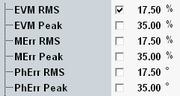

Error Vector Magnitude
A poor modulation accuracy of the UE transmitter increases the transmission errors in the uplink channel of the LTE network and decreases the system capacity. The error vector magnitude (EVM) is the critical quantity to assess the modulation accuracy of an LTE UE.
According to 3GPP, the EVM measured at UE output powers ≥ -40 dBm must not exceed 17.5 % for QPSK-modulated signals and 12.5 % for 16-QAM-modulated signals.
The EVM limits can be set in the configuration dialog, depending on the modulation scheme and along with limits for the other measured quantities.

Limit settings for QPSK